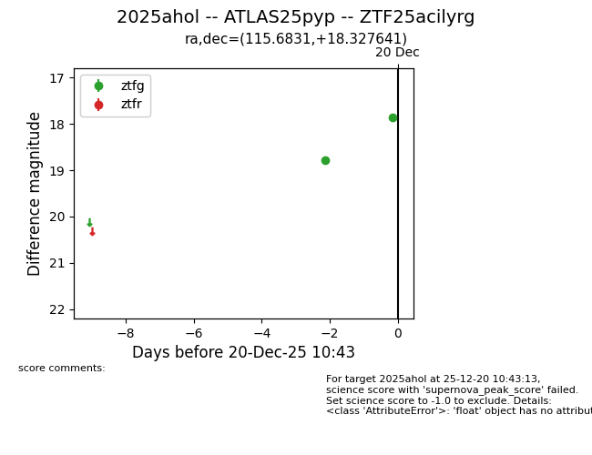
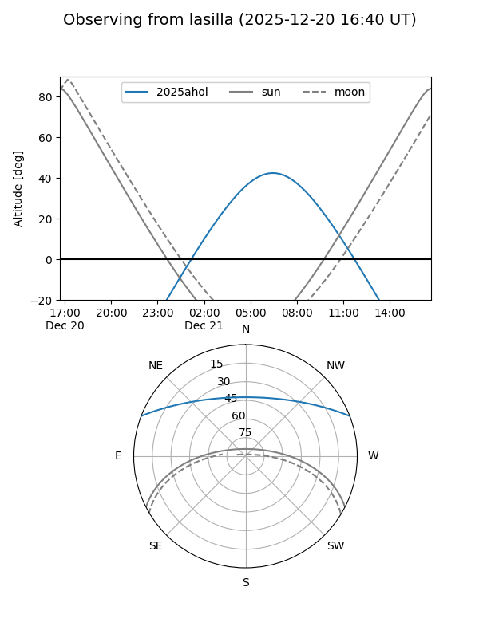
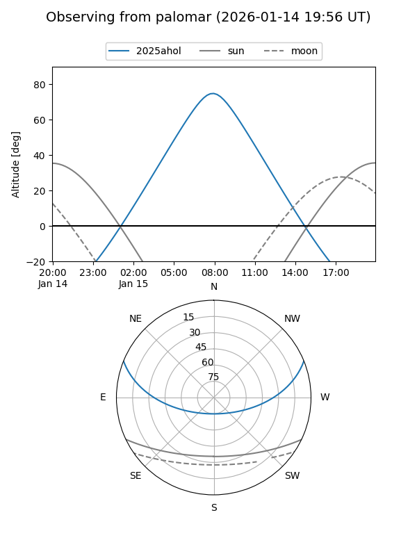
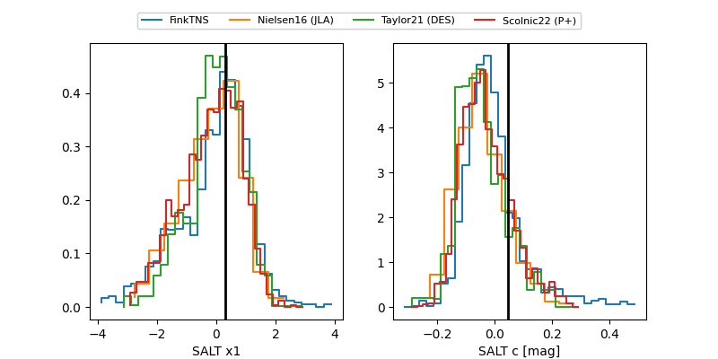

2025ahol
Target 2025ahol at 2025-12-31 16:30
Aliases and brokers:
FINK:
Lasair:
ALeRCE:
TNS:
YSE:
alt names
ZTF25acilyrg (ztf,fink_ztf)
2025ahol (tns,yse)
ATLAS25pyp (atlas)
Coordinates:
equatorial (ra, dec) = 115.6831,+18.32764
equatorial (HMS+DMS) = 07:42:43.94,+18:19:39.51
galactic (l, b) = (201.7014,+19.32323)
Flags:
Photometry:
last atlasc=16.70, atlaso=16.84, ztfg=16.53, ztfr=16.63
1 atlasc, 4 atlaso, 4 ztfg, 3 ztfr detections
Lightcurve

Visibility


Additional plots
